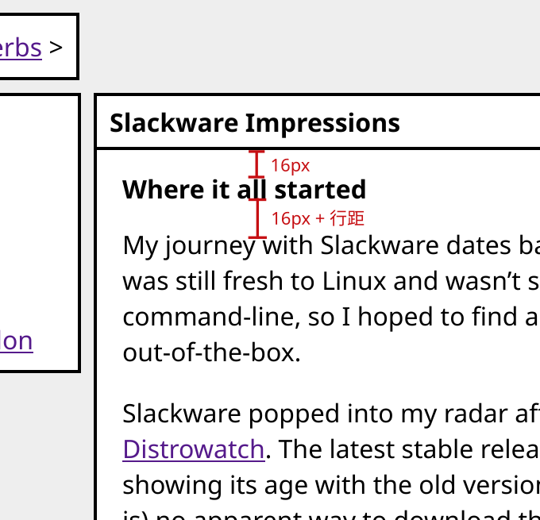

我在重寫網站 CSS 時發現的各種事
最近我重新寫過了整個網站的 CSS，讓網站煥然一新。我一直以來很欣賞像是 Slackware 首頁 或是一些 GNU 說明文件網頁的風格，因此這次重寫就是以這幾個網頁為參考標準。
但是重寫的過程中，總是有許多可怕的眉角等著絆倒你…
單位長度：px、em、rem
之前在網路上學 HTML / CSS 的時候，總會看到：盡量避免用 px，因為 px 會隨著各個裝置螢幕大小而有所不同；如果想要設計適應性（能在電腦、平板跟手機上瀏覽的）網頁，要多用 em 跟 rem。
但這次我完全不遵照這個規定，一切以 px 為主，有必要時才使用 rem，但還是能達成適應各種螢幕大小的目的。為什麼呢？因為在 CSS 中，px 不是實際上的螢幕像素，而是「一個能舒適地用肉眼看見的大小，不會小到要瞇眼才能看得清楚，也不會大到看得到各個像素」（翻譯自這篇 Mozilla Hacks 文章）。因此用 px 作為大小的基礎其實沒有想像中的糟，反而能完整反映讀者「看到的大小」會是多少。至於不用 em 或 rem 的原因是，em 其實沒有想像中的好控制，因為只要讀者設定不同的字體大小，版面就會跑掉。
border、padding、margin 對於 width 跟 height 的影響
在設計頁面的時候，為了讓一行不會長到影響閱讀，會需要控制最大寬度；但最大寬度這件事，跟許多 CSS 中的排版設定有很大的關係。我發現：
border 跟 padding 不算在 max-width 內。
在寫這個網站的 sidebar 時出現了這個問題：sidebar
如果要放左邊，真正的內容就要往右移；而這個寬度是：sidebar 的
width + 兩邊 border 的寬度 + padding 的寬度 +
空隙的距離。因此最後右移的大小是：
112px（sidebar 寬度）
16px（兩邊 padding：8px*2）
4px（兩邊 border：2px*2）
+ 8px（預留給空隙的寬度，等同於導覽列跟sidebar的距離）
-------
140px在算各種距離的時候，也同樣要把這套邏輯套上去，才能算出最適合的寬度。
行距（line-height）
行距在 CSS 中的定義其實大有問題：他並不是單純在每行之間加入空白，而是將每行上下各加一點空白，讓文字在兩邊空白的中間。這個奇怪之處讓段落邊的空白很難拿捏，因為段落與段落間的空白視覺上會大於段落到邊界的空白。用文字很難描述這個現象，見下圖：

更大的問題是，這個問題似乎只存在於英文字上，中文字則沒這個問題，因此不能直接將第一行行距減少就拍拍屁股走人。目前還沒試到滿意且滿足兩種語言的作法，只好先擱著。
這次更新還有動到其他部份，像是清單項目的行距；總而言之，整體調起來還算滿意。
Last updated: 2023-03-19